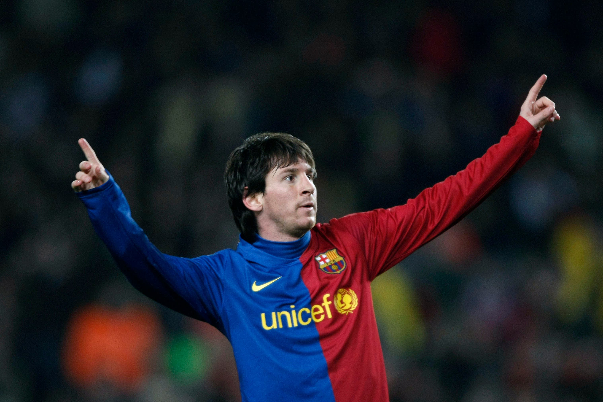

At Barcelona, Messi grew from La Masia prodigy to one of the most dominant players in the history of the game:
Messi’s international career completes his GOAT résumé, ending the “can he win with his country?” debate:
Beyond raw numbers, Messi’s consistency and adaptability strengthen his case as the greatest of all time: